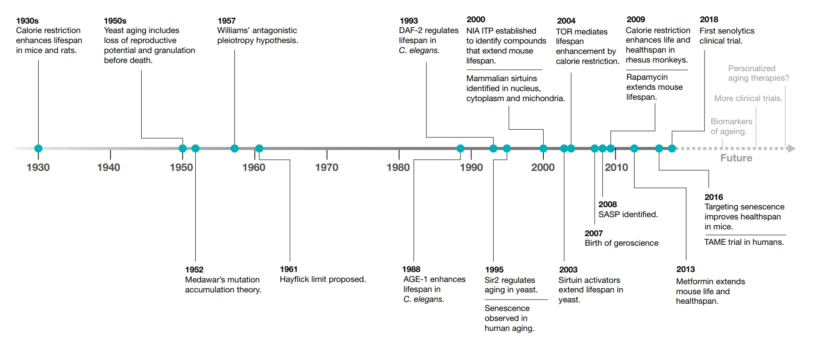
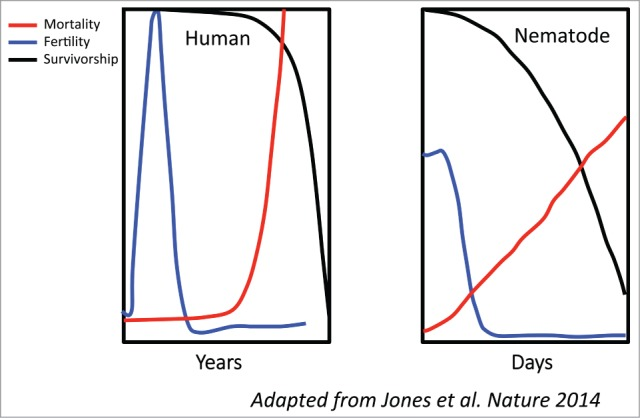
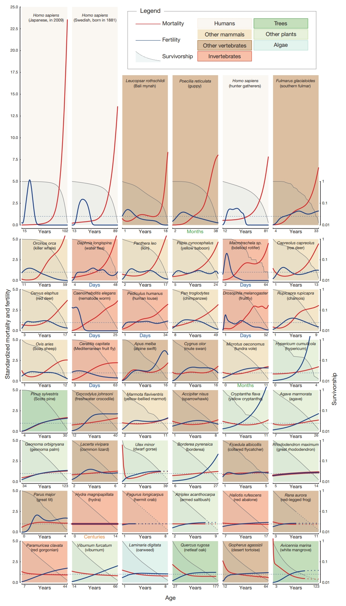

Chapter 4 Aging
4.1 Introduction
Below is a nice timeline of some major milestones in aging research (Campisi et al. 2019).
knitr::opts_chunk$set(comment=NA, fig.width=1, fig.height=1)
knitr::include_graphics(rep("images/04-8.jpg", 1))
4.2 Somatic Mutation Theory
In their study covering 7,664 tumors, Martincorena and Campbell illustrate an almost complete absence of negative selection against somatic mutations (Martincorena et al. 2017). This is lack of negative selection is quite different from the force at the population level where it acts quite strongly on the germline. This result may be an important finding for the somatic theory of aging (Morley 1995), as it may be an indication that point mutations are largely of negligible effect size within somatic cells. As such, if point mutations do play a role in aging, it seems that this may be limited to those that are neutral or advantageous to a cell.
4.3 Calorie Restriction
1939 was the first time that calorie restriction was shown in mice and rates to increase lifespan (McCay, Crowell, and Maynard 1935). This effect of longevity has also been reproduced in primates (Pifferi et al. 2018; Mattison et al. 2017).
4.4 Genetics of Aging
Peter Medawar proposed in 1952 that aging is the result of a reduction in the force of natural selection for a species after its reproductive years (Medawar 1952). In part this theory seems a bit obvious as at its core it really seems to state that organisms evolve to their niches. Furthermore, it may seem a bit simplified to me as organisms appear to have significantly different fertility loss and survivorship relationships. In the following figure the fertility rates in humans and C. elegans appear to be rather similar, but their mortality curves appear to be strikingly different (Aguilaniu 2015).
knitr::opts_chunk$set(comment=NA, fig.width=1, fig.height=1)
knitr::include_graphics(rep("images/04-6.jpg", 1))
Here is a more comprehensive understanding of the relationship between fertility and mortality (O. R. Jones et al. 2014). The diversity in the following figure makes me inclined to wonder if Medawar was fundamentally flawed in assumption that fertility rates decrease as a function of age and it and other losses in functionality are the result of a systemic relaxation in the forces of selection with the age of an organism.
knitr::opts_chunk$set(comment=NA, fig.width=1, fig.height=1)
knitr::include_graphics(rep("images/04-7.jpg", 1))
In part, motivated by the theories begun by Medawar, selection experiments were performed in Drosophila to select for late breeding, and this yielded a nearly two-fold increase in maximum lifespan (Rose and Charlesworth 1980). In part, this illustrates that lifespan can be significantly dependent on genetics and or epigenetics. At least 800 genes have been directly implicated in lifespan regulation in C. elegans (though in light of Jonathan Pritchard’s work, I can only imagine this number will continue to climb until it reaches the total gene count in each organism), and these genes can be found here.
Supercentenarians and the oldest populations concentrate nicely within areas that have no birth certificates and a shorter mean lifespan the general country (S. J. Newman 2019). Examples of this trend are Okinawa, Sardinia, and Ikaria. It may be possible that part of the reason for the substantial increase in maximum lifespan is due to fraud especially as people that get payments from the government like social security can be useful to people that just claim to be an elderly person that has died.
4.5 Aging Pathways and Processes
In 1993 a C. elegans mutation in daf-2 which is orthologous to mammalian genes for insulin and insulin-like growth factor was found to nearly double the lifespan of the organism (Kenyon et al. 1993).
Target of rapamycin (TOR) proteins have important metabolic effects that also impact maximum lifespan. A common evolutionary hypothesis for the general role of TOR in modulation of maximum lifespan is that it shifts metabolic investment from reproduction and growth into somatic maintenance, and that this switch increases the longevity of an organism (Kapahi et al. 2010).
In 1995 Brian Kennedy identified the epigenetic silencing factors, sirtuins (Sir) in yeast (Kennedy et al. 1995). Sir2 is a protein deacetylase that depends on the coenzyme nicotinamide adenine dinucleotide (NAD+) (Imai et al. 2000). On the basis that NAD+ levels increase during conditions that are typically associated with longevity such as exercise, fasting, and dietary restriction, it is commonly suggested that NAD+ supplementation may increase lifespan (though this idea seems a bit simple to me) (Mouchiroud et al. 2013).
References
Campisi, Judith, Pankaj Kapahi, Gordon J Lithgow, Simon Melov, John C Newman, and Eric Verdin. 2019. “From Discoveries in Ageing Research to Therapeutics for Healthy Ageing.” Nature 571 (7764). Nature Publishing Group: 183.
Martincorena, Iñigo, Keiran M Raine, Moritz Gerstung, Kevin J Dawson, Kerstin Haase, Peter Van Loo, Helen Davies, Michael R Stratton, and Peter J Campbell. 2017. “Universal Patterns of Selection in Cancer and Somatic Tissues.” Cell 171 (5). Elsevier: 1029–41.
Morley, Alexander A. 1995. “The Somatic Mutation Theory of Ageing.” Mutation Research/DNAging 338 (1-6). Elsevier: 19–23.
McCay, Carl M, Mary F Crowell, and Lewis A Maynard. 1935. “The Effect of Retarded Growth Upon the Length of Life Span and Upon the Ultimate Body Size: One Figure.” The Journal of Nutrition 10 (1). Oxford University Press: 63–79.
Pifferi, Fabien, Jérémy Terrien, Julia Marchal, Alexandre Dal-Pan, Fathia Djelti, Isabelle Hardy, Sabine Chahory, et al. 2018. “Caloric Restriction Increases Lifespan but Affects Brain Integrity in Grey Mouse Lemur Primates.” Communications Biology 1 (1). Nature Publishing Group: 30.
Mattison, Julie A, Ricki J Colman, T Mark Beasley, David B Allison, Joseph W Kemnitz, George S Roth, Donald K Ingram, Richard Weindruch, Rafael De Cabo, and Rozalyn M Anderson. 2017. “Caloric Restriction Improves Health and Survival of Rhesus Monkeys.” Nature Communications 8. Nature Publishing Group: 14063.
Medawar, Peter Brian. 1952. An Unsolved Problem of Biology. College.
Aguilaniu, Hugo. 2015. “The Mysterious Relationship Between Reproduction and Longevity.” In Worm, 4:e1020276. 2. Taylor & Francis.
Jones, Owen R, Alexander Scheuerlein, Roberto Salguero-Gómez, Carlo Giovanni Camarda, Ralf Schaible, Brenda B Casper, Johan P Dahlgren, et al. 2014. “Diversity of Ageing Across the Tree of Life.” Nature 505 (7482). Nature Publishing Group: 169.
Rose, Michael, and Brian Charlesworth. 1980. “A Test of Evolutionary Theories of Senescence.” Nature 287 (5778). Nature Publishing Group: 141.
Newman, Saul Justin. 2019. “Supercentenarians and the Oldest-Old Are Concentrated into Regions with No Birth Certificates and Short Lifespans.” bioRxiv.
Kenyon, Cynthia, Jean Chang, Erin Gensch, Adam Rudner, and Ramon Tabtiang. 1993. “A c. Elegans Mutant That Lives Twice as Long as Wild Type.” Nature 366 (6454). Nature Publishing Group: 461.
Kapahi, Pankaj, Di Chen, Aric N Rogers, Subhash D Katewa, Patrick Wai-Lun Li, Emma L Thomas, and Lutz Kockel. 2010. “With Tor, Less Is More: A Key Role for the Conserved Nutrient-Sensing Tor Pathway in Aging.” Cell Metabolism 11 (6). Elsevier: 453–65.
Kennedy, Brian K, Nicanor R Austriaco Jr, Jisi Zhang, and Leonard Guarente. 1995. “Mutation in the Silencing Gene S/R4 Can Delay Aging in S. Cerevisiae.” Cell 80 (3). Elsevier: 485–96.
Imai, Shin-Ichiro, Christopher M Armstrong, Matt Kaeberlein, and Leonard Guarente. 2000. “Transcriptional Silencing and Longevity Protein Sir2 Is an Nad-Dependent Histone Deacetylase.” Nature 403 (6771). Nature Publishing Group: 795.
Mouchiroud, Laurent, Riekelt H Houtkooper, Norman Moullan, Elena Katsyuba, Dongryeol Ryu, Carles Cantó, Adrienne Mottis, et al. 2013. “The Nad+/Sirtuin Pathway Modulates Longevity Through Activation of Mitochondrial Upr and Foxo Signaling.” Cell 154 (2). Elsevier: 430–41.